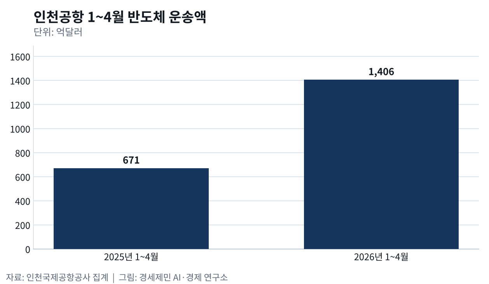
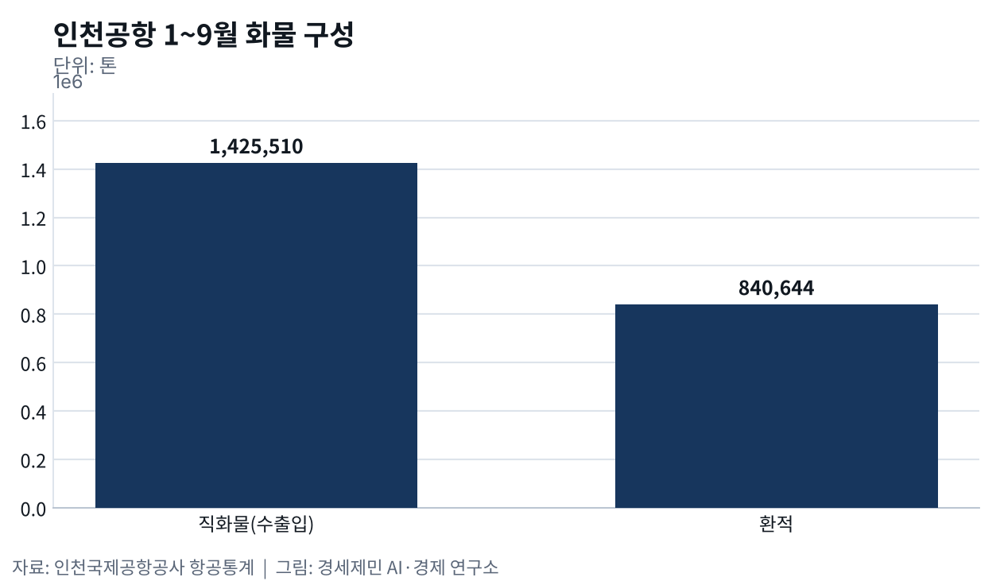
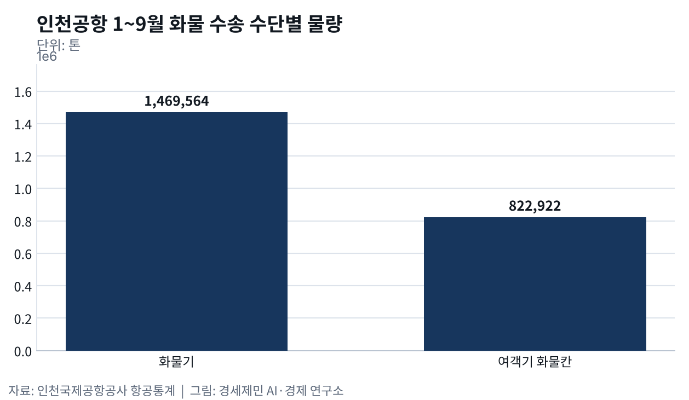

반도체 운송액 110%↑, 인천공항 화물 장비·바이오·특송으로 넓혀야
- 1~4월 반도체 운송액 1406억달러, 1년 새 110%↑
- 메모리 반도체 수입 146.5%↑, UPS 수입 처리 능력 7배↑
- 바이오의약품 수출 15.8%↑, 유럽 화물 노선 새로 열려
인천공항 화물이 늘었다. 인천국제공항공사 항공통계를 보면 올해 1~9월 인천공항 화물은 229만2486톤으로 1년 전보다 5.0% 늘었다.
한국에서 나가고 들어오는 직화물은 142만5510톤으로 8.5% 늘었다. 다른 나라 화물을 인천에서 갈아 싣는 환적은 84만644톤으로 0.1% 줄었다. 늘어난 화물은 모두 한국을 드나드는 수출입 화물이었다.
항공화물은 수출과 생산이 늘어야 따라서 느는 파생수요다. 그 한가운데 반도체가 있다. 공사 집계로 1~4월 인천공항 반도체 운송액은 1406억달러로 1년 전 671억달러보다 110% 늘었다.
산업통상부 자료로는 9월 반도체 수출이 603억달러로 263% 늘어 수출 절반을 차지했다. 반도체 위에 무엇을 더 실을지가 인천공항 화물 전략이다.
수출 화물 11.6%↑, 하루 늦으면 관세 최대 2.1%
반도체 수출이 처음 600억달러를 넘은 9월, 인천에서 나간 직화물은 8만5266톤으로 12.4% 늘어 올해 가장 많았다. 1~9월 수출 직화물도 70만5070톤으로 11.6% 늘었다.

반도체는 가볍고 비싸서 운송비가 상품값에서 차지하는 몫이 작다. 그래서 배보다 비행기를 타고, 무게보다 운송액이 먼저 크게 늘어난다.
비싼 화물이 비행기를 타는 까닭은 시간이다. 미국 퍼듀대 연구진은 2013년 미국 수입 자료를 분석해 운송이 하루 늦어지면 상품값에 0.6~2.1% 관세를 무는 것과 같다고 밝혔다.
다른 제품을 만드는 데 쓰는 부품과 소재가 시간에 가장 민감했다. 연구진은 항공 운임이 내려가면서 교역이 늘고 생산이 여러 나라로 나뉘어 퍼졌다고 봤다.
수입 화물 5.6%↑, 메모리 반도체 수입 146.5%↑
공사 통계로 1~9월 수입 직화물은 72만440톤으로 5.6% 늘었다. 관세청이 7월 15일 낸 6월 확정치를 보면 수입은 661억달러로 30.0% 늘었고 메모리 반도체 수입은 146.5% 늘었다. 반도체와 인공지능 장비를 만드는 데 드는 부품·소재 수요가 수입을 끌어올렸다.
수출과 수입이 함께 늘어야 화물기가 가는 길과 오는 길을 모두 채운다. 들어오는 화물을 받을 시설도 커졌다. UPS는 300억원가량을 들여 인천공항 특송센터 수입 처리 능력을 연 2만7000톤에서 19만톤으로 7배 늘리고 4월 3일 확장 개소식을 열었다.

배로 들어와 비행기로 나가는 화물도 늘었다. 인천항만공사 집계로 1~7월 이런 해상·항공 복합운송 화물은 2만3303톤으로 14.2% 늘었다.
화물 운임 41.8%↑, 여객기 화물칸 7.6%↑
국제항공운송협회(IATA)가 9월 29일 낸 자료를 보면 8월 세계 항공화물 수요는 4.4% 늘었는데 공급은 0.1% 줄었다. 아시아~북미 노선은 13.2% 늘어 가장 빨랐다.
수요가 공급보다 빨리 늘자 운임이 뛰었다. 대한항공 2분기 화물 노선 수익은 1조5419억원으로 46.1% 늘었다. 나른 양은 3.0% 늘었는데 화물 1톤을 1km 나르는 값은 41.8% 올랐다.
대한항공은 서버랙과 반도체 같은 고부가가치 화물에 더해 인공지능 데이터센터에 들어가는 변압기 같은 크고 무거운 화물도 더 받겠다고 밝혔다. 비싼 화물로 무게까지 채우겠다는 전략이다.
여객기 아래 화물칸도 힘을 보탰다. 공사 통계로 1~9월 여객기에 실린 화물은 82만2922톤으로 7.6% 늘었다. 화물기에 실린 146만9564톤(3.6%↑)보다 빨리 늘었다.

화물기 노선도 새로 열렸다. 에어프랑스-KLM 계열 화물 항공사 마틴에어카고가 3월 31일 인천~암스테르담 노선을 시작했다. 보잉 747-400 화물기를 주 3회 띄우며 홍콩을 묶어 돈다.
반도체 장비와 의약품, 항공우주 부품을 주로 싣는다. 공사는 유럽과 동북아를 잇는 화물망이 넓어지고 이 노선으로 해마다 1만6000톤이 새로 생길 것으로 내다봤다.
장비·바이오·특송, 반도체 위에 더 싣는 네 갈래 전략
바이오의약품이 다음 후보다. 식품의약품안전처가 10월 8일 낸 잠정 집계로 1~9월 바이오의약품 수출은 66억달러로 15.8% 늘어 같은 기간 가장 많았다.
미국 수출은 23.7% 줄었지만 상위 10개국 가운데 7개국이 유럽이었고 네덜란드는 42.4% 늘었다. 바이오의약품은 정해진 온도를 지키며 빨리 옮겨야 한다. 유럽행 화물 노선과 저온 창고를 키우면 반도체 다음 화물이 될 수 있다.
전략은 네 갈래다. 첫째, 반도체 공급망을 오가는 화물로 잡는다. 칩 수출만이 아니라 장비와 소재, 부품이 들어오고 다시 나가는 흐름까지 공항 안에서 빨리 처리해야 한다.
둘째, 바이오의약품 저온 유통을 갖춘다. 셋째, 수입 특송과 해상·항공 복합운송을 넓힌다. 넷째, 외국 화물 항공사를 더 끌어오고 운수권(다른 나라에 비행기를 띄울 권리)을 넓혀 화물기를 늘린다.
항공화물은 수출과 생산을 따라 움직여서 반도체 경기가 꺾이면 인천공항 화물도 함께 꺾인다. 올해 화물을 키운 것은 환적이 아니라 한국을 드나드는 수출입 화물이었다. 반도체가 열어 놓은 화물기 노선 위에 장비와 바이오의약품, 수입 특송을 더 실어야 한다. 그것이 인천공항 화물 전략이 나아갈 다음 단계다.
※ 이 기사는 AI 프로그램 클로드를 활용해 작성했습니다.
이 기사는 인공지능을 활용해 작성했습니다. 사실관계는 저자가 확인했습니다.
참고문헌
기관 자료
- 인천국제공항공사, 「인천공항 통계보기 — 시계열 통계(2025·2026년 1~9월, 화물·직화물·환적·여객기·화물기)」, 2026년 10월 9일 조회. https://www.airport.kr/co_ko/651/subview.do
- 인천국제공항공사, "인천공항공사, 화물항공사 마틴에어 인천공항 신규취항", 2026년 3월 31일. https://www.airport.kr/bbs/co_ko/84/139311/artclView.do
- 인천국제공항공사, "인천공항, UPS 특송물류센터 확장", 2026년 4월 6일. https://www.airport.kr/bbs/co_ko/84/139318/artclView.do
- 산업통상부, 「2026년 9월 수출입 동향」, 2026년 10월 1일. https://www.motir.go.kr/kor/article/ATCL3f49a5a8c/172254/view
- 관세청, 「2026년 6월 월간 수출입 현황 [확정치]」, 2026년 7월 15일(KDI 경제교육·정보센터 게재본). https://eiec.kdi.re.kr/policy/materialView.do?num=284321
- 식품의약품안전처, 「K-바이오의약품, '26년 3분기까지 수출 66억 달러, 역대 최대 실적」, 2026년 10월 8일(KDI 경제교육·정보센터 게재본). https://eiec.kdi.re.kr/policy/materialView.do?num=287934
- 대한항공, 「2026년 2분기 잠정 실적」(IR 자료), 2026년 7월 13일. https://kr.img.news.koreanair.com/wp-content/uploads/2026/07/2026%EB%85%84-2%EB%B6%84%EA%B8%B0-%EC%9E%A0%EC%A0%95%EC%8B%A4%EC%A0%81-IR-%EC%9E%90%EB%A3%8C-1.pdf
- IATA, "Air Cargo Demand Grows 4.4% in August", 2026년 9월 29일. https://www.iata.org/en/pressroom/2026-releases/09-29-air-cargo-demand-grows-august/
연구 논문
- Hummels, D. L., & Schaur, G., "Time as a Trade Barrier", 『American Economic Review』 103(7), 2013년 12월, pp.2935-2959. https://doi.org/10.1257/aer.103.7.2935
언론기사
- 강준완, "인천공항 '삼전닉스 고맙다'…반도체 운송실적 두배 급증", 한국경제, 2026년 6월 10일. https://www.hankyung.com/article/2026061089811
- 이배운, "기름값 치솟아도 하늘길 붐빈다…항공 수요 예상밖 '선방'", 이데일리, 2026년 6월 11일. https://www.edaily.co.kr/News/Read?mediaCodeNo=257&newsId=05018406645480736
- 박재형, "대한항공 2분기 매출 5兆 '역대 최대'...영업익 2618억원으로 전년比 34% 감소", 스마트투데이, 2026년 7월 13일. https://www.smarttoday.co.kr/ko-kr/articles/109459
- 안종명, "관세청, 6월 수출입현황 발표...수출 152조원 역대 최고", 조세금융신문, 2026년 7월 15일. https://www.tfmedia.co.kr/mobile/article.html?no=205803
- 전예준, "올 상반기 인천항-공항 해상·항공 복합물동량 14% 증가", 뉴시스, 2026년 8월 25일. https://www.newsis.com/view/NISX20260825_0003761282
- 강승구, "韓 수출 8000억달러 시대…9월도 역대 최대 1209억달러", MTN, 2026년 10월 1일. https://news.mtn.co.kr/news-detail/2026100109075980661
- 강승지, "K-바이오 수출 66억 달러 '역대 최대'…유럽서 증가세 지속", 뉴스1, 2026년 10월 8일. https://www.news1.kr/bio/pharmaceutical-bio/6314499
- 이서희, "K-바이오의약품 수출 66억달러 '역대 최대'…美 줄고 유럽 늘어", 아시아경제, 2026년 10월 8일. https://www.asiae.co.kr/article/2026100815060278113